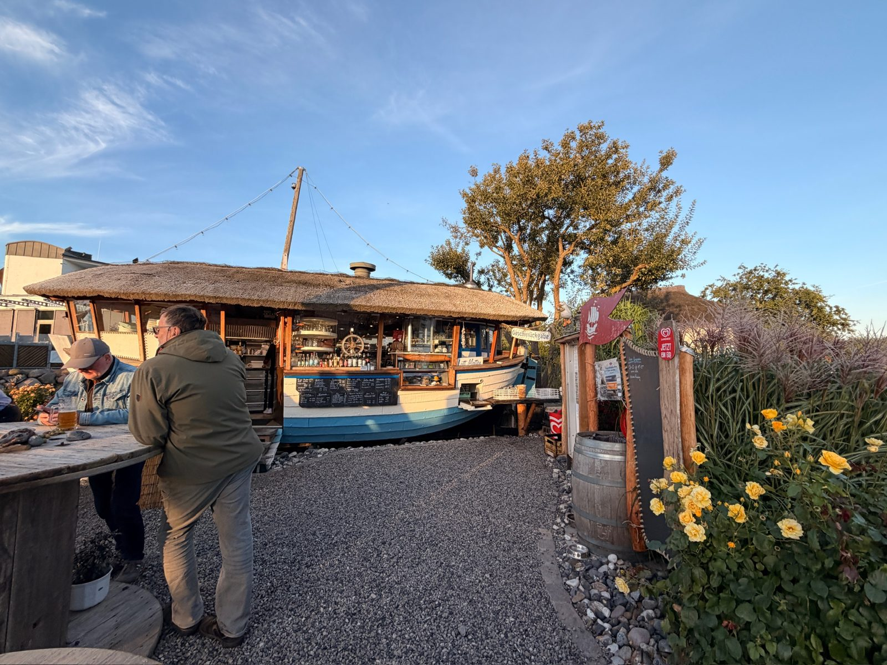
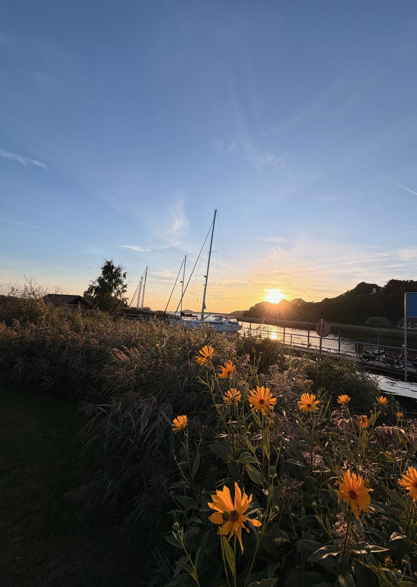

10. September 2026
Strandbar am Abend

Zum Tagesausklang noch ein Drink an dieser besonderen Strandbar – charmant aus einem alten Boot gebaut, mit Blick aufs Meer.

10. September 2026

Zum Tagesausklang noch ein Drink an dieser besonderen Strandbar – charmant aus einem alten Boot gebaut, mit Blick aufs Meer.
